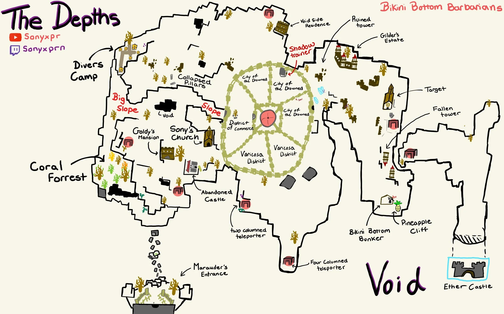

Depth Map

How to get out of Depth or return to your regional world.
There are two process in getting out of the depth.
- Step 1 you need to look for ways to enter the trail room.
- Step 2 is to defeated the given trail.
There are two way to get trail room. The first one is the build a barrel ladder up to the top of the wall inorder to enter the castle. Another way is to enter the city called "city of drowned" head to the center where there is a gate. The gate will open or close depend on your luck in the server, however you can leave and join back the game to look for a open gate.
The trail contain five type of NPC mob which include regular soldier, angle, sharko, corrupted sharko, and enforcer. Trail can be done with multiple player at once, however
the difficulty will also increase. Which it is recommended to do the trail yourself.
Trail NPC will be match with player with certain level plus luck.
- Level 1 to 10
You will get a free trail pass which you get to leave without encountering a NPC match
- Level 10 to 15
Will encounter regular NPC with a sword that does basic m1 and R attack with parry.
- Level 15 to 20
Will encounter angle that has same move set as regular NPC, but with one addtional unqiue skill that shoot 3-4 projectile.
- Level 20 to 40
Will encounter regular sharko or corrupted sharko depend on your luck.
- Level 40 or Higher
Will encounter Enforcer. To deal with enforcer you need to master their attack pattern and learn to parry.
If you can't beat the trail your character will be wipe and you need to start over from level 1.
Luck
Luck is used for obtaining rare and legendary talents and items. The percentage of your luck determine your chance of obtain better items and talents. Talent are cards that allow your to unlock certain hidden ability and it also increase your character stats.
Everytime you obtain a rare or legendary talent your percentage of luck will drop until it reach their base amount which is 20 percent. The current max amount of luck is 43 percent.
You can obtain luck by killing player or mob. Getting luck from player is easier and faster if you are good with your PVP skill. Everytime you grip a player you take half of their luck away.
Not all mob drop luck when you defeated them. The mob that drop gurantee luck are bosses and corrupted mob because those mob are lot stronger than regular mob that are used for EXP grinding.
Ban And Scammer
-
Selling in game items/account for money will you get ban if you were caught or you might get scam by others.
-
Trade scam-->You can scam regular player without consequence, however your reputation in discord will be know as scammer. Scamming a moderator will get you banned from the game and discord server.
-
Exploiting in this game will get you ban. They might ban your IP if you not using a VPN.
-
Duplicated item will be remove which if you got one from trading then you will loss that item once they patch it or new update is made.
-
To get someone ban for unethical behavior you need their in game name and their user ID.
-
Disocrd vouch system (Vouches are given by player to other player that had done their trade) -> Not all vouches can be trusted (Fake Vouch from their friend or multiple accounts)
-
Discord rule and behavior can get you ban. There is a list of rules in discord, however if you don't know the rules and you break them you were given a certain amount of warning before getting youself ban.